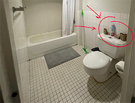
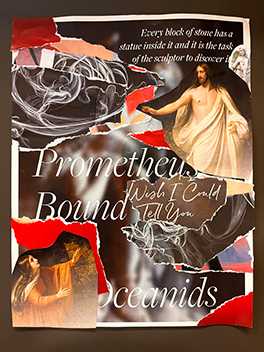

Why document trash?
That is a valid question. In a world filled with wonderous sights and sensations, placing a spotlight on the drab and discarded items that lay in the wastebin seems absurd. From an outsiders’ perspective, I would be inclined to agree. However, this documentation of garbage is a clear representation of me, society, and our future. In its most basic sense, this project forces me to consider the items I dispose of, how I dispose them, and why I dispose of them. Through this, the project holds me accountable for my unnecessary waste buildup and clutter; do I truly need to use straws when I know how to drink from a cup just fine? Do I need to continually purchase plastic water bottles when I have reusable ones on my shelf? Do I need to hoard those old flyers or empty ChapStick that has no value to me? The more I stopped and thought about it, the more I realized just how accustomed I had become to trash in my life, because it is something that has been with me from the start.
However, archaeologist Sarah Newman would beg to differ. Although trash is something people may presume to existed since the inception of our planet, Newman argues that this idea of “unwanted” somethings is relatively new.1 For instance, looking to the past at the ancient Aztec capital of Tenochtitlán, Newman describes how they “had a sophisticated system of waste management in place” that included numerous ways to dispose of human excrement, from usage as agricultural fertilizer to religious offerings to being sold for tanning animal hide. Even to this day, the waste we flush down our toilets serves a use. According to science and environmental journalist Isobel Whitcomb, our excrement is run through a wastewater treatment plant in which the feces are turned into biosolids, with “around 55% [getting] used for agriculture.”2 However, that still leaves the remaining biosolids to be left in the landfills, when they could have been giving back to our planet instead.
But what exactly happens in a landfill? You can picture it, I’m sure, as many of us do: as large mounds of discarded decomposing trash in a faraway land, where it cannot come back to haunt us. However, as Newman points out, there is no away to speak of, and that garbage certainly is not decomposing at a fast enough rate. All our trash comes back to us in one way or another, whether it is evident or not. Newman explains that billions of metric tons can be found “often reduced to microplastics” all around the world. English professor Brian Thill also discusses these concepts in his novel Waste, describing frequently occurring garbage in life as trash familiars: a plastic bag waving on a tree branch, some deteriorated flyers still clinging to dear life on a bus stop, a ChapStick lying in the street after having fallen out of someone’s pocket—the list goes on.3 Life for these trash familiars goes on because they never even get the chance to “decompose” in the first place; instead, they are preserved in our wasteful world.
A collection of used toilet paper rolls standing proudly atop a toilet in my friend's bathroom.
So, that brings us back to this project: documenting the waste. While it is an art form in itself to keep tabs on my trash, I really hope this project gives me a better perspective on both my overconsumption of products as well as my inability to discard items that I no longer need. For example, I save trinkets such as a phone card holder in the event that I may use it one day, even though I have already had it for over a year and have not touched it once. I save empty ChapSticks because I do not want to forget the exact kind that I got, because I used to cherish it so deeply. To this, you may argue, “why not just take a picture of it so you remember?” This is a fair point; however, Brian Thill also points out that we accumulate digital waste as well as physical. Those thousands of photos that you will never once look through? Garbage. Those emails you haven’t checked in months? Junk. Why create more unnecessary waste when I can strengthen and rely on my own memory? If the ChapStick really was that important to me, I should be able to recall it if I truly do need it again.
All this sentimentality and emotional attachment to this “valuable” trash, just to give no thought the next second when I throw out single use utensils, straws, excess food, containers, and more. I want to be more conscious of these actions while having the ability to let certain items go to minimize clutter in my living space (as I believe that a clear room clears my mind). I have most recently been inspired by a project started in my hometown, called the One Stop Eco Shop on Instagram. Founded by two teenage girls, the company’s mission is to “reduce the amount of trash that goes into [the] landfill” by making sustainable products “more accessible and convenient for everyone” (Loza & Loza)4. From providing information regarding zero waste/composting/going green to selling sustainable products and servicing as a refillery, this organization has also made me reflect more heavily on my waste. Although I have held back from purchasing just yet because I still have plenty of soaps, toothbrushes, shampoos, etc. left, I plan to start slowly incorporating these zero-waste methods and goods into my daily life to reduce my impact on our planet. I truly hope that readers who find my page will not only enjoy my entertaining stories and commentary, but also stick around for the education and inspiration to start watching our trash more seriously.
A beatiful collage made from magazine scraps. Features biblical characters, inspirational quotes, and a theme of reds and blacks.